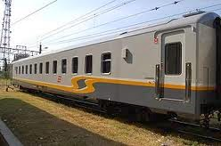

 Kereta Kelas 1 New Image merupakan rancangan desain dari Balai Yasa Manggarai. Awal di launching kereta ini di jalankan untuk rangkaian KA.Sembrani New Image dan KA.Turangga New Image. Selanjutnya INKA pun membuat kereta serupa dengan jendela kecil yang sekarang di pakai oleh Rangkaian KA.Argo Jati, KA.Argo Bromo Anggrek, KA.Gajayana, dan KA.Argo Dwipangga. Itupun sekarang dalam satu rangkaian terkadang di campur dengan kereta eksekutif biasa..
baca selengkapnya disini
KERJASAMA SINGKAT PJKA DENGAN PN POS DAN GIRO (Bagasi Pos Seri PW-9000)

Dinasan Bagasi Pos dimulai per 25 Juli 1968. Awalnya, Bagasi Pos ditempelkan ke KA Gaya Baru Malam (DAK-SBI). Namun, per 12 Agustus 1968 dipindahkan ke KA Limex (di kemudian hari, KA Limex berubah menjadi KA Mutiara Utara). Dinasan Bagasi Pos kembali diubah pada Oktober 1971, dikembalikan ke KA Gaya Baru Malam Utara. PN Pos dan Giro sebenarnya merasa keberatan dengan perubahan ini. KA Gaya Baru Malam Utara dianggap tidak mendukung operasi Bagasi Pos secara maksimal. PN Pos dan Giro selalu meminta agar dinasan Bagasi Pos dikembalikan ke Mutiara Utara, namun selalu ditolak oleh PJKA. Hingga akhirnya, PN Pos dan Giro kehabisan kesabaran. Operasional Bagasi Pos dihentikan sepenuhnya pada 1975.
baca selengkapnya disini
KEMBALI KE HALAMAN UTAMA